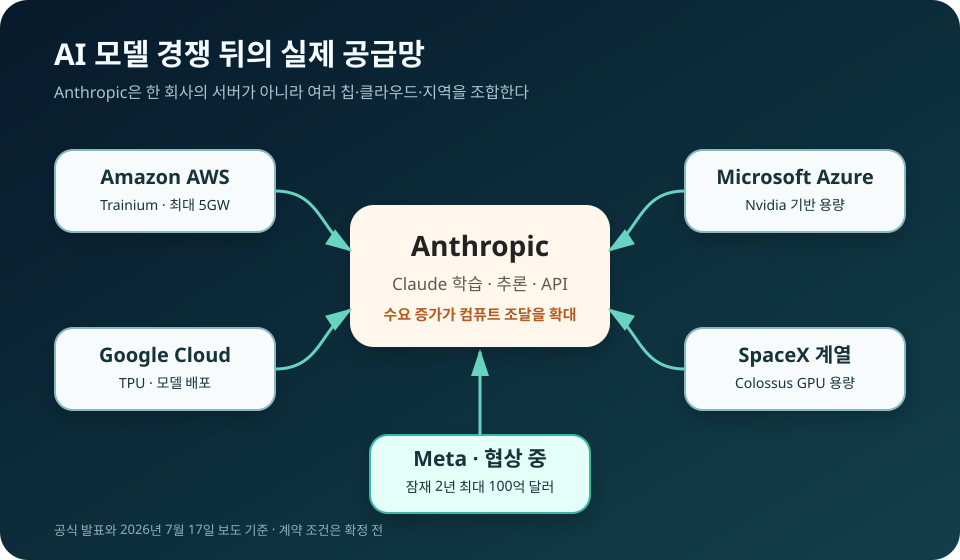

Meta와 Anthropic의 100억 달러 컴퓨트 협상, AI 클라우드 판이 달라진다
Meta가 Anthropic에 AI 컴퓨팅 용량을 빌려주는 협상을 진행하고 있다. 보도된 잠재 규모는 2년간 최대 100억 달러다. 아직 서명된 계약은 아니지만, 이 협상은 광고와 소셜미디어로 성장한 Meta가 거대한 데이터센터를 외부에 파는 AI 인프라 사업자로 움직이고 있음을 보여준다. 동시에 Anthropic은 Amazon, Google, Microsoft, SpaceX에 이어 또 하나의 대형 컴퓨트 공급처를 확보하려 한다.
What Happened
계약 체결 뉴스가 아니라, AI 기업끼리 컴퓨트를 사고파는 시장이 열린다는 뉴스다
Reuters는 7월 17일 Meta와 Anthropic이 컴퓨팅 파워 임대를 논의 중이며 잠재 거래 규모가 2년간 최대 100억 달러라고 전했다. 최초 보도는 New York Times였고, CNN은 별도 소식통을 통해 협상 자체를 확인했지만 구체적인 금액은 아직 유동적이라고 설명했다. 따라서 지금 확정할 수 있는 사실은 두 회사가 협상 중이라는 점까지다.

보도에서 확인된 내용은 어디까지인가
Reuters 보도에 따르면 논의 대상은 Meta가 보유하거나 건설 중인 AI 인프라의 일부를 Anthropic이 임대하는 거래다. 최대 100억 달러라는 숫자는 익명의 관계자들을 인용한 보도 기준이며, 계약 기간과 실제 사용량, 칩 종류, 데이터센터 위치는 공개되지 않았다. Meta와 Anthropic도 세부 조건을 공식 발표하지 않았다.
이 차이는 중요하다. “100억 달러 계약이 체결됐다”라고 쓰면 사실을 앞서가지만, “최대 100억 달러 규모의 컴퓨트 임대를 협상하고 있다”라고 쓰면 현재 확인된 범위와 맞는다. 대형 인프라 계약은 전력 공급, 서버 인도 일정, 고객 사용량에 따라 최종 금액이 크게 바뀔 수 있다.
다만 협상의 방향은 갑자기 등장한 것이 아니다. Bloomberg Law는 7월 9일 Mark Zuckerberg가 AI 클라우드 사업을 검토하는 것이 합리적이라고 말했다고 전했다. Meta가 AWS 출신 클라우드 임원을 영입하려 한다는 보도도 이어졌다. 이번 Anthropic 협상은 그 구상이 실제 고객 논의로 넘어가는 첫 대형 사례가 될 수 있다.
Meta는 왜 남에게 컴퓨트를 빌려주려 하나
Meta는 2026년 자본지출 전망을 1,250억~1,450억 달러로 제시했다. 회사의 1분기 실적 자료는 부품 가격 상승과 향후 데이터센터 용량 확보가 지출 확대의 핵심이라고 설명한다. 이는 단순한 서버 구매가 아니라 전력 계약, 토지, 네트워크, 냉각 설비를 포함하는 장기 투자다.
7월 13일 Meta는 루이지애나 Richland Parish 데이터센터를 5GW 규모로 확대하고, 지역 투자 총액이 500억 달러를 넘는다고 공식 발표했다. 5GW는 도시 규모의 전력을 요구하는 초대형 프로젝트다. 이런 시설은 완공 즉시 모든 서버가 자사 서비스에 100% 사용되는 것이 아니라, 건설과 장비 반입, 모델 훈련 일정에 따라 유휴 구간이 생길 수 있다.
그 용량을 외부 고객에게 판매하면 Meta는 감가상각 부담을 매출로 바꿀 수 있다. 광고 사업이 데이터센터 투자를 떠받치는 구조에서, 데이터센터 자체가 돈을 버는 구조로 한 단계 이동하는 셈이다. Amazon이 온라인 쇼핑을 위해 만든 인프라에서 AWS를 키웠던 역사와 비교되는 이유다.
그러나 Meta가 곧바로 AWS와 같은 종합 클라우드가 되는 것은 아니다. 기업용 클라우드는 서버만 많다고 완성되지 않는다. 고객 지원, 보안 인증, 과금 시스템, 데이터베이스, 네트워크 서비스, 장애 보상 체계가 필요하다. 초기 Meta의 제안은 범용 클라우드보다 대형 AI 연구소를 위한 전용 컴퓨트 임대에 가까울 가능성이 크다.
Anthropic은 왜 경쟁사 인프라까지 필요할까
Anthropic은 이미 Amazon과 최대 5GW의 추가 컴퓨트 계약을 맺었다. 공식 발표에 따르면 Trainium2와 Trainium3를 포함한 용량이 2026년부터 단계적으로 들어오며, Claude는 AWS, Google Cloud, Microsoft Azure에서 제공된다. 그럼에도 Meta와 추가 협상을 하는 것은 수요 증가 속도가 한 공급자의 증설 속도보다 빠르다는 뜻이다.
프런티어 AI 회사에는 학습용 컴퓨트와 서비스용 컴퓨트가 모두 필요하다. 새 모델을 훈련할 때는 수개월 동안 대규모 GPU 또는 전용 가속기를 묶어야 하고, 모델이 출시된 뒤에는 전 세계 사용자의 질문을 처리할 추론 용량을 상시 확보해야 한다. 사용자가 늘면 좋은 모델을 가진 것만으로는 부족하고, 응답을 실제로 만들어낼 서버가 매출 상한을 결정한다.
공급처를 여러 곳으로 나누면 칩과 지역도 분산할 수 있다. AWS의 Trainium, Google의 TPU, Microsoft Azure와 Nvidia GPU, SpaceX 계열 데이터센터, 그리고 Meta 인프라를 병행하면 특정 칩의 공급 지연이나 특정 지역의 전력 부족에 덜 흔들린다. 반대로 운영 소프트웨어와 모델 최적화를 여러 환경에 맞춰야 하므로 복잡성과 비용은 커진다.
AI 클라우드 시장에 생길 세 가지 변화
첫째, AI 연구소와 인프라 공급자의 경계가 흐려진다. Meta는 자체 모델을 만드는 회사이면서 다른 모델 회사에 서버를 파는 공급자가 된다. SpaceX와 xAI의 데이터센터 거래도 같은 방향을 보여준다. 경쟁사와 공급자가 동시에 되는 관계가 AI 산업의 새로운 표준이 될 수 있다.
둘째, 클라우드 가격 경쟁이 세분화된다. AWS, Azure, Google Cloud 같은 하이퍼스케일러는 소프트웨어와 관리 서비스를 묶어 판다. Meta나 SpaceX 같은 신규 공급자는 초대형 고객에게 전력과 GPU를 장기 계약으로 직접 제공할 수 있다. 일반 기업용 클라우드와 프런티어 모델용 도매 컴퓨트가 서로 다른 시장으로 나뉘는 모습이다.
셋째, 데이터센터 투자의 평가 기준이 바뀐다. 지금까지 투자자는 수천억 달러의 AI 자본지출이 언제 수익으로 돌아올지 물었다. 대형 외부 계약이 실제로 체결되면 Meta는 내부 생산성이나 광고 개선뿐 아니라 인프라 매출로 투자 회수 경로를 설명할 수 있다. 반대로 계약이 무산되면 과잉 건설 우려가 다시 커질 수 있다.
사용자와 기업 고객에게 무엇이 달라지나
컴퓨트 공급이 늘면 Claude의 사용량 제한과 응답 속도, API 용량이 개선될 가능성이 있다. 하지만 100억 달러급 장기 계약 비용은 결국 API 가격과 기업 계약에 반영된다. 사용자에게 중요한 것은 “GPU가 더 많다”는 홍보보다, 혼잡 시간에도 안정적으로 쓸 수 있는지와 가격이 얼마나 유지되는지다.
기업 고객은 모델 성능 외에 데이터가 어느 사업자의 어느 지역에서 처리되는지도 확인해야 한다. Anthropic이 여러 클라우드와 데이터센터를 사용하면 선택지는 넓어지지만, 규제 산업에서는 데이터 위치, 암호화, 장애 책임, 공급망 보안 조건을 계약서에서 더 세밀하게 따져야 한다.
한국 시장에서도 같은 변화가 예상된다. 국내 클라우드와 통신사는 GPU를 보유하는 것만으로 경쟁하기 어렵고, 장기 전력 계약과 냉각, 네트워크, 모델 운영 소프트웨어를 묶어 안정적인 AI 용량을 제공해야 한다. 대기업이 내부 인프라를 외부 고객에게 판매하는 모델도 검토될 수 있다.
아직 남은 질문
가장 큰 변수는 계약의 실제 체결 여부다. 최대 금액만 알려졌을 뿐 최소 구매 의무, 칩 종류, 시작 시점, 서비스 수준은 공개되지 않았다. Meta가 단순 서버 임대에 그칠지, 자체 AI 모델과 개발 도구까지 묶을지도 알 수 없다. 공식 발표가 나오기 전에는 숫자보다 산업 방향을 보는 편이 안전하다.
또 하나는 이해관계다. Meta는 Anthropic의 경쟁 모델을 만들면서 동시에 핵심 인프라를 제공하게 된다. 고객 데이터와 운영 정보의 분리, 우선순위 배정, 장애 시 책임을 어떻게 보장할지가 계약의 신뢰도를 좌우할 것이다. 경쟁사 인프라를 빌리는 거래일수록 기술보다 거버넌스가 중요해진다.
내가 보는 핵심
이 뉴스의 중심은 100억 달러라는 큰 숫자가 아니다. AI 산업에서 가장 희소한 자산이 모델 아이디어만이 아니라 전력에 연결된 실제 컴퓨트라는 점, 그리고 그 자산을 가진 회사가 경쟁사에도 판매할 만큼 시장이 커졌다는 사실이 중요하다.
계약이 성사되면 Meta는 광고회사에서 AI 인프라 공급자로 사업 경계를 넓히고, Anthropic은 컴퓨트 공급망을 더 분산한다. 성사되지 않더라도 협상 자체가 보여준 방향은 남는다. 다음 AI 경쟁은 모델 순위뿐 아니라 누가 더 싸고 안정적으로 수년치 전력과 칩을 확보하느냐에서 갈릴 가능성이 크다.
출처와 더 읽을 자료
- Reuters: Meta in talks for $10 billion Anthropic compute deal
- Financial Times: Meta and Anthropic in compute talks
- CNN: Meta in talks to rent AI infrastructure to Anthropic
- Bloomberg Law: Zuckerberg says exploring an AI cloud business makes sense
- Meta 공식 2026년 1분기 실적 및 자본지출 전망
- Meta 공식: 루이지애나 데이터센터 5GW 확장
- Anthropic 공식: Amazon과 최대 5GW 컴퓨트 협력
Comments
댓글